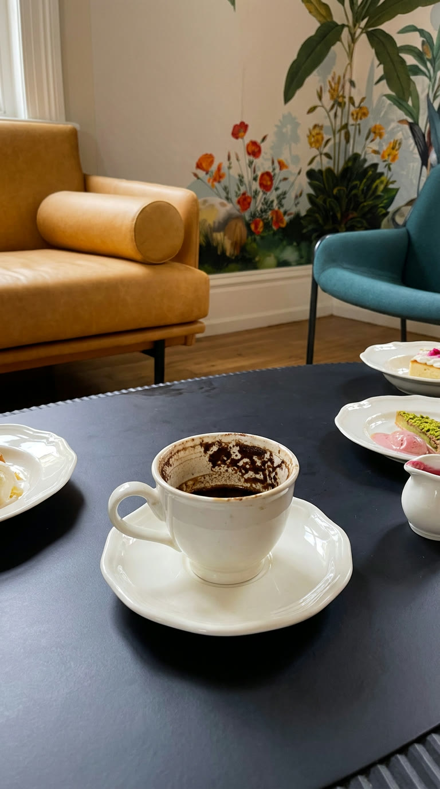
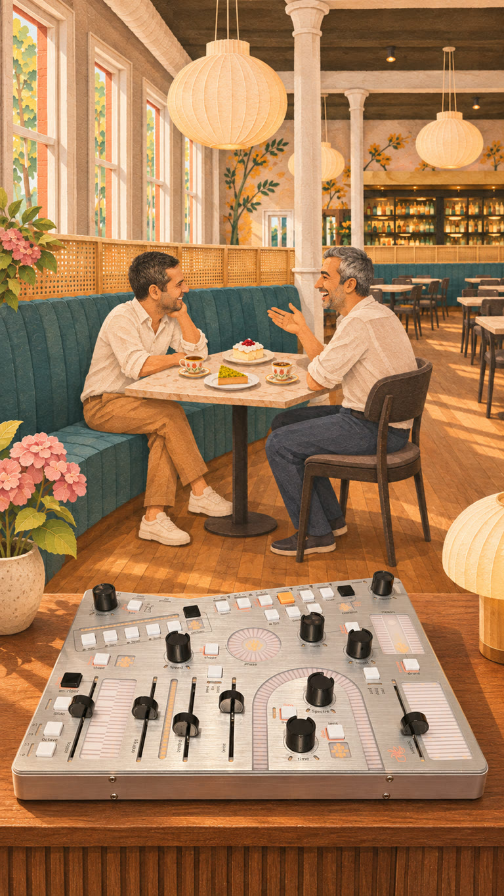

my pitch to join fal
Cold genmedia
A short film made specifically for fal. Here is how interviews, public posts, company research and a lot of iteration became an 18-second invitation to this page.
Step 0: Umut’s $50 credit on Twitter
This started with Umut giving me $50 in fal credits on Twitter. That gave me a way to try the tools. I decided to use the credit to make something specifically for fal: a short, personal film that could open a conversation about joining the company.
The tweet where it started. The $50 was the starting credit, rather than a claim about the final cost of every experiment.
Atrium → restaurant → Turkish coffee → a fortune in the grounds → a doorway to ermanreads.com/fal. Open the film.
Why these details?
The opening: Atrium
Burkay posted an instrument photo with a joke about an automatic offer to work at fal if you recognized it. That became my opening reference: Atrium. It gave the film a shared point of recognition before any introduction.
The original post. The instrument’s placement in the restaurant is my fictional staging.
The restaurant: Dalida
The Sourcery interview opens at Dalida, with a story about a wedding there. I used real restaurant photographs and food references to build a recognizable setting, without putting its name across the screen. The room should carry the reference.
Sourcery, around 1:30 · Dalida. The film is an illustrated, AI-generated interpretation of the setting.
The central idea: fal inside the cup
In the same interview, the founders explain the name’s two meanings: Features and Labels, and the Turkish tradition of reading fortunes in coffee grounds. That made Turkish coffee the story’s center. A bird, an envelope and a doorway appear as markings in the grounds; the camera travels into the doorway and reveals this page.
The name’s explanation, around 44:29. Turning those symbols into an invitation was my interpretation.
The texture: painted paper
Burkay had shared Kevin Ngo’s animation using paintings and paper textures. That was a concrete visual reference for the handmade treatment. I wanted the people, room and objects to belong to the same illustrated world.
Kevin Ngo’s paper-texture animation. Sharing this work is a taste signal, not a complete description of someone’s preferences.
The music: House of Cards
An older MIT profile listed Radiohead’s In Rainbows—the whole album. I chose “House of Cards” from it after trying other soundtrack directions. The final edit uses a short excerpt from the official music-video recording, at its original speed, softened toward the reveal.
The historical MIT profile · Radiohead’s official video. The album preference is historical; the track selection is mine.
From research to a creative brief
- Understand the company and its people. I collected founder interviews, hiring discussions, job listings, public team pages and LinkedIn career histories. The company and career research helped me understand functions, backgrounds and where my experience might fit. Public profiles provide a partial picture, so I kept confirmed roles separate from inferred reporting lines.
- Keep the source with the observation. Interview transcripts, timestamps and public posts made it possible to return to the original context. A caption can misattribute a speaker; a repost is not authorship; an old favorite is not necessarily a current one.
- Translate a few signals into the film. Atrium supplies the opening, Dalida the setting, coffee the central metaphor, paper the material and Radiohead the soundtrack. The rest of the research informed the pitch rather than becoming extra visual references.
- Make the destination useful. The short film leads here, where the introduction and CV explain who I am. The film opens the conversation; the page supplies the substance.
The actual photo-to-image-to-video pipeline
I collected real Dalida interiors and food photographs, then used them as visual inputs to create stills before animating those stills. The coffee reference included a Google Maps photo screenshot I supplied. The saved collection also contains photographs scraped from Dalida’s official website and the restaurant’s design portfolios.
- Collect the real references. For the early coffee shot, the inputs were Dalida’s actual lounge-and-dessert-table photograph and the Google Maps screenshot of a white coffee cup. The restaurant photo supplied the furniture, room and dishes; the screenshot supplied the cup’s shape. Other collected photographs anchored the dining room, bar and lighting.
- Create a reference-guided still on fal. Nano Banana Pro Edit (
fal-ai/nano-banana-pro/edit) combined those references into a vertical coffee-table image. The saved request used 9:16, 1K, one PNG. Its prompt asked to preserve the mustard sofa, teal chair, botanical mural and actual desserts, and add a small, mostly finished Turkish coffee cup with visible grounds. Screenshot interface and text were excluded. - Animate the generated image. The resulting still became the
image_urlfor Kling 2.5 Turbo Pro image-to-video (fal-ai/kling-video/v2.5-turbo/pro/image-to-video). The early coffee animation requested five seconds, a forward camera push into the cup, and a coffee-ground ending image viatail_image_url. The Atrium/restaurant shot used the same still-first approach. - Refine toward the final paper-style film. Later painted-paper stills were created with the built-in image generator rather than Nano Banana on fal. The final visual generation used MiniMax H3 Max reference-to-video (
minimax/h3-max/reference-to-video) on fal: an Atrium close-up pinned asimage_url, with a connected restaurant scene and a coffee-ground doorway image as the two references. The accepted request specified 14 seconds, 768P, 9:16, seed 19112030 and prompt expansion disabled. No reference video was supplied. It returned 14.4 seconds at 768 × 1344. - Finish locally. I kept the approved visual take, slowed its later section to reach 17.965 seconds, and added the chosen “House of Cards” excerpt. The film above is that final edit, rather than the earlier five-second Kling tests.
The reusable technique is to establish the scene in a still first, review it, then feed that approved image to the video model. This made the visual brief concrete before spending on motion.
How the idea changed through the attempts
First, cut the dancing
The first idea was people dancing, a reveal of Atrium making the music, then a transition into Turkish coffee and the fortune. I initially suggested Tarkan’s “Şımarık.” The dance scene felt artificial and cheesy when I saw it. That pushed me toward a quieter scene anchored in a real place.
I also considered a San Francisco bridge view. Dalida gave the story a more specific connection to the founders, so I kept the restaurant and dropped the extra establishing scene.
Then, research the room instead of inventing one
I wanted them to recognize Dalida from its atmosphere rather than a big restaurant sign. The collection grew beyond a few photos: official room, bar, lounge and food images; interior-design portfolio photographs; and a restaurant video used to check the room’s windows, columns, console, pendant lights and direction of view.
The instrument’s position was invented for the film. I wanted it on a separate console, with diners and the coffee table in the same visible space. Treating it as another dining table, or carrying the amplifier and home wall from the original Atrium photo into the restaurant, broke that connection.
A montage was easier than the camera journey I wanted
Early versions combined separate instrument, restaurant and coffee shots. The coffee-to-door ending worked well enough that I kept asking to preserve it, but the room-to-table cuts felt disconnected. I wanted the camera to pull away from Atrium, reveal people eating, approach a table, enter the cup and keep moving through the fortune.
Several H3 attempts still cut between scenes despite “one continuous shot” in the prompt. One switched around 3.2 seconds; another jumped from instrument to room around 2.25 seconds. A correct URL at the end did not make the camera route work.
I paused generation to study the workflow
We collected public tutorial transcripts and read the relevant sections alongside model documentation. The production archive reached 16 tutorial videos. This led to a more concrete distinction between an appearance reference, an actual first frame and a motion guide.
One experiment used a locally rendered 3D camera rehearsal as a video reference for Seedance 2.5 (bytedance/seedance-2.5/reference-to-video). The guide described the route; the real room, instrument, food and grounds images described appearance. Drafts ran at 480p. A later guide used smoother curves because stopping at each waypoint had made the camera hesitate.
This produced a useful earlier branch: a roughly 22-second film with a continued coffee ending, local URL correction and, in some versions, Topaz Proteus enhancement through fal-ai/topaz/upscale/video. It also introduced new problems: room occupancy, seating, daylight versus evening light and the cup’s state all needed review. The final paper film took a different route.
The paper treatment became more than a filter
I first wanted texture without changing the composition. Some attempts barely changed the photographic look; others repainted the room or altered the viewpoint. The useful shift was to approve a paper-style scene with the instrument and diners already connected.
Even a tight instrument close-up could lose the relationship to the restaurant. The final opening was cropped from the approved connected image, keeping its perspective. That close-up became the actual first frame; the wider image remained a reference for the reveal.
The last problem was the doorway
“Follow the bird” made the bird fly out as a separate object. Describing a warm space beyond the door introduced a corridor and another door. The successful revision kept the bird and envelope as flat coffee-ground markings, specified one opening, and put only featureless ivory light beyond it.
The accepted H3 take ran 14.4 seconds. An attempt to request 18 seconds hit the endpoint’s 15-second limit, so I kept the approved generation and retimed it locally. That preserved the take rather than gambling on another generation for a timing change.
Two intermediate images from the process


Research that continued beyond the film
The short film grew into a broader effort to understand fal and where I could contribute. Much of this work continued after the visual was approved; it helped me understand the company beyond the original restaurant concept.
- Founder interviews. The collection reached 15 founder interviews and talks, representing about 8.5 hours of source material, plus a teammate interview. Captions, timestamps and original links made the material searchable. Relevant passages covered creative tools, developer marketing, hiring, agency and the founders’ working relationship. Browse the public source index · Read the founder research brief.
- Turkish sources. The Komünite interview helped resolve who said what: Burkay discussed music and synthesizers, while Görkem discussed tennis and cycling. Their account of friendship and small projects before the company helped shape the relaxed shared-table scene. Music and synthesizers, around 37:30 · The friendship story.
- Company and hiring structure. I collected job descriptions and historical careers snapshots to understand what the company needed and how hiring changed. One review captured 51 then-current listings; a later refresh found 50. Comparing listings across time helped me understand how the company’s functions and priorities evolved.
- LinkedIn career research. I started with public team directories, tested a small employee-profile collection, then expanded and reconciled it against known missing profiles. The final saved set contained 209 profiles, with 153 included in the employee analysis after exclusions. Experience and education timelines helped me compare entry paths. It remained a partial, self-reported dataset rather than a verified org chart.
- Understand the work behind the title. I searched for non-founder employee interviews to understand what people actually worked on and how they joined. Titles alone could not explain responsibilities or reporting lines. Interview evidence about prior collaborations and working relationships was more useful than guessing from a profile.
What the experiments actually cost
The starting $50 credit let me experiment, but a reservation in a local script was only an estimate. I later checked billing by saved request ID. These are historical charges from this project, not current model prices or a complete project total:
| Experiment | Recorded charge |
|---|---|
| H3 Max, earlier 12-second native 1080p reference-image attempt | $1.97 |
| Seedance, 12-second 480p dining/seating draft | $2.97 |
| Seedance, 12-second native 720p occupied-room edit | $6.67 |
| H3 Max, 12-second 1080p attempt with a video reference | $3.62 |
Reference inputs and editing settings changed the charge. An enhanced 1080p export also differed from a video generated natively at 1080p. Those distinctions mattered when deciding whether to regenerate, upscale or keep an approved take.
The ending instruction that worked
Inside the existing coffee cup, the bird and envelope remain flat, motionless silhouettes made of coffee grounds on the porcelain wall. The camera moves past these markings directly toward the single doorway-shaped opening in the grounds. Continue straight through it until its edges and all coffee grounds leave the frame completely. Beyond the opening is only soft, featureless ivory-white light. Once this pale light fills the entire screen, ermanreads.com/fal gently appears in the center. No flying bird, separate envelope, corridor, room or second door. Only the camera moves.
This wording is retained from the accepted request. It improved the ending; the URL still begins appearing slightly before the doorway edges completely leave the frame.
What making it taught me
- Approve the still before animating. The strongest improvement came from a connected starting image: instrument, restaurant, diners and coffee in one believable space. More prompt wording could not reliably repair a contradictory image.
- Give each reference a job. An opening frame, a style reference and a motion reference do different things. A list of images does not automatically become a storyboard. The original instrument photo kept pulling its home background into the restaurant.
- Describe the camera precisely. Position, direction, speed and destination all matter. “One shot” still produced cuts in several attempts. A short film needs a physically plausible route and consistent lighting.
- Track the same objects. I needed the existing cup beside the diner, already finished, with wet grounds on exposed porcelain. Otherwise the model invented another cup or turned a full drink into grounds.
- Be literal about the metaphor. “Follow the bird” produced a flying bird. The intended bird and envelope were flat, motionless coffee-ground markings. Only the camera should move through the single doorway.
- Change one thing when asking for one thing. A texture edit should preserve the viewpoint and composition. Rebuilding the restaurant at the same time made it harder to judge the requested change.
- Preserve an approved take. Earlier versions used Kling and Seedance experiments; the approved paper-film visual came from H3 Max. Its 14.4-second take became about 18 seconds through a local retime: the first six seconds stayed unchanged and the rest slowed to 70%. Timing and soundtrack changes did not require another visual generation.
- Choose music by listening. Generated scores, live excerpts and added effects did not settle the choice. I picked the final passage. A successful audio decode or loudness measurement cannot judge whether music fits the film.
- Save the experiment. Exact prompts, inputs, request IDs, outputs and actual billing made revisions traceable. A delayed job should be polled using its existing ID rather than submitted twice. Quoted base prices were not always the final charge.
- Review the actual ending. Check the URL’s spelling, legibility, cup continuity and doorway passage. The accepted take reveals the URL slightly before the doorway edges fully disappear; it is the version I chose after reviewing the tradeoff.
A reusable cold genmedia workflow
Research the company and recipient. Save evidence. Choose a small number of meaningful details. Write one clear visual journey. Approve the starting image. Generate and review within a budget. Preserve what works with local edits. Send the film with a useful destination and a clear reason to talk.
My takeaway: personalization works when the details belong in the story. Each reference should earn its place in the short time you are asking someone to give you.
Related research: cold outreach examples · video discussions of outreach.